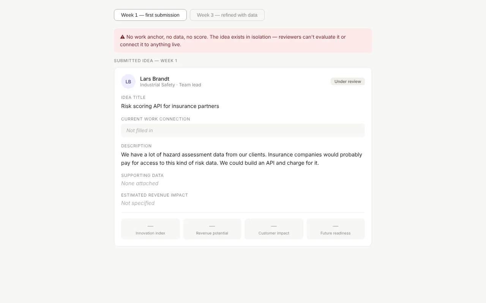
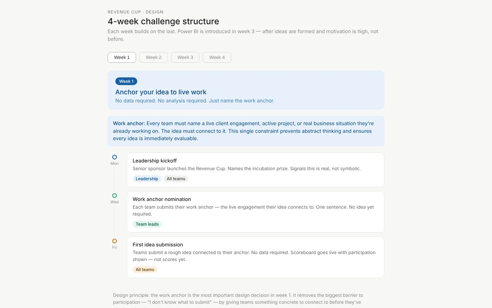
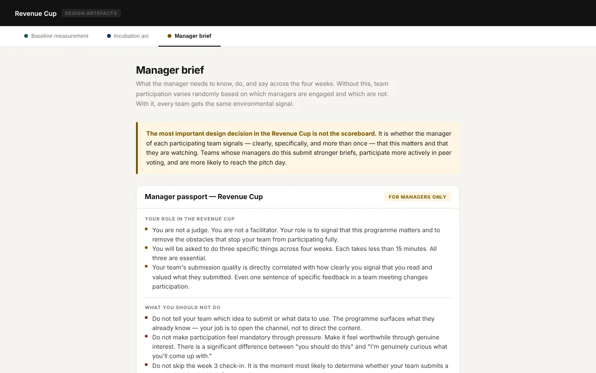
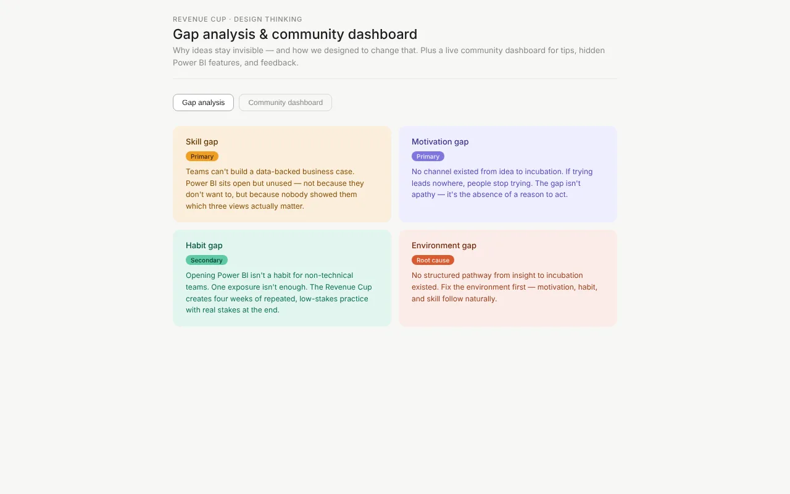
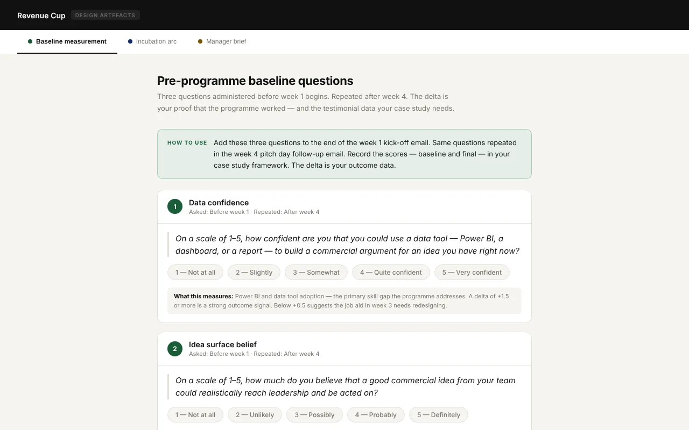

The Revenue Cup
A four-week team challenge that gets technical specialists to share commercial ideas — and to use Power BI to back them up.

The live scoreboard shows the idea behind every score. Visibility, not points, is what motivates teams.
The problem
Leadership wants new revenue ideas from its specialist teams, and it wants more value from a Power BI licence that hardly anyone uses. The first idea was a Power BI course.
A gap analysis showed four problems, and only one was skill. Specialists already had ideas about their clients, but there was no channel for them, no habit of using data to make a case, and no reason to believe an idea would go anywhere. A course alone would fix the smallest of the four.
“We know things about our clients that nobody else does. I just don't know how to make that visible.”Marcus Bauer, Senior Hazard Assessment Engineer (persona)
How I approached it
- Analyse the gapsSkill, motivation, habit and environment — each with its own designed response.
- Change the environmentA visible challenge, peer voting and a real prize: six weeks of incubation.
- Prototype earlyScoreboard, timeline and examples built as clickable pages.
- Plan the measurementBaseline before week 1, repeated after week 4.
Key design decisions
Anchor every idea to live work
In week 1, teams name a real client engagement before they're asked for any idea. That removes the biggest barrier — “I don't know what to submit” — and keeps ideas concrete enough to evaluate.
Compare week 1 and week 3
Introduce Power BI in week 3, not week 1
Teams meet the tool only when they already have an idea and a question to answer. A one-page job aid shows the three views they need. Week 2, the most likely dropout point, gets a planned mid-point nudge.
Open the timeline
Make managers part of the design
Managers get a short brief with three touchpoints, the exact words to use at each, and answers to the four objections their teams are most likely to raise.
Read the manager brief
Everything I built
Each artefact is a working page — open it and click through it as a learner or facilitator would.
- Live scoreboardFour scoring dimensions, peer voting and expandable team cards.
- Before and afterThe same idea in week 1 and week 3 — what good looks like.
- Four-week timelineWeek by week, including the week-2 nudge.
- Gap analysisThe four performance gaps and the response to each.

- Measurement and incubationBaseline questions, the six-week incubation arc and the manager brief.

Results and next steps
This is a concept project for a fictional client — fully designed, not yet delivered. These are the measures built into the design, so a real pilot would produce evidence from day one.
How I'll measure it
- Data confidence: “How confident are you that you could use a data tool to build a commercial argument for an idea?” (1–5)
- Idea belief: “How much do you believe a good idea from your team could reach leadership and be acted on?” (1–5)
- Motivation profile: why each person is taking part, asked before week 1
- Scores taken before week 1 and again after week 4
What success looks like
- At least one data-backed idea reaches a leadership investment decision
- Data confidence rises by 1.5 points or more on average
- Belief that ideas reach leadership goes up — the clearest sign the environment changed